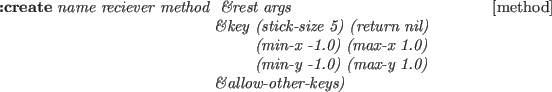
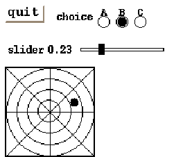
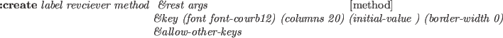
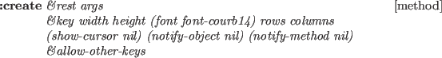

Subsections
Image processing facilities are defined in "vision/piximage".
For the representations of image data, two classes,
pixel-image and color-pixel-image, are defined.
Pixel by pixel translations through look-up tables,
edge-finder, and image data transfer in pbm formats are realized.
An LUT is a vector for the translation of pixel data.
make-equilevel-lut levels &optional (size 256) [function]
-
-
returns a one-dimensional integer-vector that linearly maps values between
0 and size into values between 0 and levels.
For example, (make-equilevel-lut 3 12) returns
#i(0 0 0 0 1 1 1 1 2 2 2 2).
look-up src dest lut [function]
-
-
translates values stored in src vector into dest vector
using lut. If dest is nil, a vector of the same class and
size as src is created.
For example, (look-up #i(1 2 3) nil #(10 20 30 40 50))
returns #i(20 30 40).
look-up2 src dest lut1 lut2 [function]
-
-
Src and dest are integer-vector or byte-vector (string) of the same
size.
:Look-up2 translates src into dest looking-up lut1 and lut2
successively.
look-up* src dest luts [function]
-
-
luts is a list of look-up tables.
src is translated into dest successively looking up look-up tables
given in luts.
concatenate-lut lut1 lut2 &optional (size 256) [function]
-
-
concatenates two look-up tables lut1 and lut2,
and returns a new look-up table which performs the same translation
as lut1 and lut2 are looked-up successively.
*x-gray32-lut* [variable]
-
- LUT to translate 32-level gray-scale into
the pixel values in the default color map x:*colormap*.
(aref *x-gray32-lut* n) returns the pixel value for nth gray-level
out of 32 levels.
*x-gray16-lut* [variable]
-
- LUT to translate 16-level gray-scale pixel
into the index of x's default color map x:*colormap*.
*x-color-lut* [variable]
-
- LUT for several vivid colors defined in
x:*color-map*.
Registered colors are "black", "red", "green", "lightblue", "yellow",
"orange", "blue", "magenta", "white".
*256to8* [variable]
-
- 256-entry LUT to translate integers in range of 0..255
into 0..7. The levels are linearly mapped.
*256to16* [variable]
-
- 256-entry LUT to translate integers in range of 0..255
into 0..15. The levels are linearly mapped.
*256to32* [variable]
-
- 256-entry LUT to translate integers in range of 0..255
into 0..31. The levels are linearly mapped.
*gray32* [variable]
-
- 256-entry LUT to translate the raw gray-scale pixels
into X's color map indices.
This is made by concatenating two LUTs, *256to32* and
*x-gray32-lut*.
An Xwindow display-able pixel-image with 32 gray-levels
can be obtained by translating
the 256-level raw image by *gray32*.
*rainbow32* [variable]
-
- 256-entry LUT to translate 256-level
hue values into into X's rainbow color map indices.
This is made by concatenating two LUTs, *256to32* and
*x-rainbow32-lut*.
A single plane of
image data is represented by pixel-image object.
pixel-image is a two-dimensional array of bytes.
The interpretation of each byte is application dependent.
Although it is most commonly used to represent brightness of a pixel,
it may be used to represent edge intensity, gradient direction,
color component intensity, bar graph, or whatever.
pixel-image [class]
:super array
:slots xpicture display-lut histogram
brightness-distribution0
brightness-distribution1
brightness-covariance
-
- Pixel-image is the two dimensional array with displaying facility
in xwindows. The pixel conversion is performed by display-lut and
the resulted image is stored in xpicture.
Major axis is taken vertically. The pixel of img at (x, y)
should be accessed by (aref img y x).
:width [method]
-
- returns the horizontal size of a pixel-image,
which is the second dimension.
:height [method]
-
- returns the vertical size of a pixel-image.
:size [method]
-
- is equivalent to array-total-size.
:transpose &optional (result (instance (class self) :init dim0 dim1)) [method]
-
-
exchanges x and y coordinates.
:map-picture lut &optional (result (send self :duplicate)) [method]
-
-
This pixel-image is translated by the lut and stored in result.
:map fn &optional (result (send self :duplicate)) [method]
-
-
applies function fn to all the pixels in the image,
and put the result in the result pixel-image.
:brightest-pixel [method]
-
- finds the brightest pixel value in this image.
:darkest-pixel [method]
-
- finds the darkest pixel value in this image.
:average-pixel [method]
-
- calculates the average intensity of all
the pixels in this image.
:halve &optional simage [method]
-
-
returns pixel-image that is shrunk into half-size image.
:subimage x y subwidth subheight [method]
-
-
cuts out a subwidth x subheight rectangular region
with its top-left corner at (x,y) of this image.
The origin of the image is taken at the top-left corner.
:Subimage returns a new pixel-image object.
:xpicture &optional lut [method]
-
-
translates this image using the look-up table lut
and sets translated pixel-image object to xpicture.
:display-lut &optional newlut [method]
-
-
sets look-up table newlut as display-lut.Then
translates this image using this look-up table
and sets translated pixel-image object as xpicture.
:display (xwin geometry:*viewsurface*) [method]
-
-
displays this pixel-image in the xwin xwindow by using :putimage.
Each pixel value is referred as a index in x's color map.
To get a desired appearance, this pixel-image must have been translated
by proper LUTs.
:duplicate [method]
-
- makes an instance of the same class
as this image object with the same width and height.
The pixel data are not copied.
:copy-from src [method]
-
- copies pixel data from another
image object specified by src. src must be of the
same dimension as this image.
:hex &optional (x 0) (y 0) (w 16) (h 16) (strm t) [method]
-
-
prints pixel data in the specified rectangular region
in the hexadecimal format.
:hex1 &optional (x 0) (y 0) (w 64) (h 16) (strm t) [method]
-
-
prints pixel data in the specified rectangular region
in the hexadecimal format.
:grin1 strm &rest msg [method]
-
-
prints this image-pixel object with its name and dimensions.
:init w h &optional imgvec [method]
-
-
initializes a pixel-image object to have w width and h height.
:amplify rate &optional (result (send self :duplicate) [method]
-
-
multiplies rate to each pixel value.
:compress-gray-scale levels &optional result &aux pict2 [method]
-
-
translates this image into range of 0..levels
and returns translated pixel-image object.
:lut lut1 &optional (result (send self :duplicate)) [method]
-
-
translates this image using the look-up table lut1
and returns translated pixel-image object.
:lut2 lut1 lut2 &optional (result (send self :duplicate)) [method]
-
-
translates this image using a look-up table that concatenated lut1
and lut1. And returns translated pixel-image object.
:histogram [method]
-
-
counts the occurrence of each pixel value in this image and returns
an integer-vector representing the histogram.
:brightness-distribution [method]
-
-
returns brightness-distribution.
:optimum-threshold [method]
-
-
returns levels that is maximum of this image's brightness-distribution.
:project-x [method]
-
- adds all pixel values of the same x coordinate
and returns a vector of these values.
:project-y [method]
-
- adds all pixel values of the same y coordinate
and returns a vector of these values.
:digitize threshold &optional (val0 0) (val1 255) result [method]
-
-
translates this image into 2 levels image val0 and val1
using threshold.
:and img2 [method]
-
-
bit-and operates between this image and img2,
and returns operated pixel-image.
:plot min max &optional color viewsurface [method]
-
-
plots pixels having values between min and max inclusively
with color (gc) on viewsurface.
:edge1 &optional (method 1) [method]
(th1 *edge-intensity-threshold*) (th2 *weak-edge-threshold*)
(run *edge-length-threshold*) (win geometry:*viewsurface*) (edgeimg1)
-
- detects edge of this image. And displays this edge on this image.
Color images are represented by color-pixel-image objects
which have three pixel-image objects to represent red, green, and
blue components in RGB representation,
or hue, lightness, and saturation components in the HLS model.
Conversion between RGB and HLS is supported.
color-pixel-image [class]
:super propertied-object
:slots width height component1 component2 component3
-
- represents color images with three pixel-image objects.
:width [method]
-
- returns the width of this image.
:height [method]
-
- returns the height of this image.
:size [method]
-
- returns
 of this image.
:red [method]
-
- returns component1.
:green [method]
-
- returns component2.
:blue [method]
-
- returns component3.
:hue [method]
-
- returns component1. A hue value between 0 and 360 is
represented by a byte value between 0 and 255.
:lightness [method]
-
- returns component2.
The normalized brightness values (0..1) are mapped into integers between 0 and 255.
:saturation [method]
-
- returns component3.
The normalized saturation values (0..1) are mapped into integers between 0 and 255.
:pixel x y [method]
-
- returns a list of three integers each of which is
taken from component1, component2 and component3 at (x,y).
This triplet can be interpreted either as RGB values or HLS values.
:monochromize &optional (NTSC nil) [method]
-
-
computes brightness from RGB components and returns a new pixel-image.
If NTSC is nil,  is computed.
If T,
 is computed.
:HLS [method]
-
- assuming this image is representing an RGB image,
converts the image into HLS representation.
RGB2HLS is called for the conversion of each pixel.
:RGB [method]
-
- assuming this image is representing an HLS image,
converts the image into RGB representation.
HLS2RGB is called for the conversion of each pixel.
:halve [method]
-
-
returns color-pixel-image that is shrunk into half-size image.
:display &optional (win *color-viewer*) [method]
-
-
displays this color-pixel-image in a xwindow
designated by win by using :putimage.
Each pixel value is referred as a index in x's color map.
To get a desired appearance, this pixel-image must have been translated
by proper LUTs.
:display-lut &optional (newlut1) (newlut2 newlut1) (newlut3 newlut2) [method]
-
-
sets look-up tables newlut1, newlut1 and newlut1
as display-lut, respectively. Then translates this image using this look-up table
and sets translated pixel-image object as xpicture.
:edge1 &optional (method 1) [method]
(th1 *edge-intensity-threshold*) (th2 *weak-edge-threshold*)
(run *edge-length-threshold*) (win *color-viewer*)
-
- detects edge of this image. And displays this edge on this image.
:hex &optional (x 0) (y 0) (w 16) (h 16) (strm t) [method]
-
-
prints pixel data in the specified rectangular region
in the hexadecimal format.
:hex1 &optional (x 0) (y 0) (w 64) (h 16) (strm t) [method]
-
-
prints pixel data in the specified rectangular region
in the hexadecimal format.
:prin1 strm &rest msg [method]
-
-
prints this image-pixel object with its name and dimensions.
:init width height &optional r g b [method]
-
-
defines the size of a color image and allocates pixel-images for each
color component.
Provided a ppm file, you can extract color (hue) values out of the image
and display it in an xwindow by the following program.
(setq ppmimg (read-pnm "xxx.ppm"))
(send ppmimg :hls) ; RGB to HLS conversion
(make-ximage (send ppmimg :hue) *rainbow32*)
Edge Finding facilities are provided by "vision/edge/edge".
edge1 img &optional (method 1) [function]
(th1 *edge-intensity-threshold*) (th2 *weak-edge-threshold*)
(run *edge-length-threshold*) result
&aux (width (send img :width)) (height (send img :height))
-
- finds edge pixels in this image.
edge1 first applies a gradient operator to every pixel.
There are three kinds of gradient operators provided:
grad3 which takes difference between horizontally and vertically
neighboring pixels,
prewitt and sobel.
method=0,1 selects grad3, 2 selects prewitt and 3 selects
sobel.
Pixels that have edge intensity greater than th1 are identified as
strong edge pixels.
After thinning edges referring to edge intensities and
directions of gradient, isolated edge pixels are marked.
Starting from end points of these strong edges, weak edge pixels
that are consistent with the strong edge's direction are searched for and linked
to compose elongated lines.
Weak edge pixels that have greater edge intensity than th2 are
unconditionally linked.
Even very weak edge pixels that have less edge intensity than th2
can be linked as long as they connect to another weak or strong edge
within run length.
edge1 returns a pixel-image object
each pixel of which represents either a strong edge pixel (=1),
a weak and elongated edge pixel (=2),
or an isolated pixel (=255).
overlay-edge ximg edgeimg [function]
-
-
displays edgeimg obtained by edge1 on top of
x-display-able pixel image ximg.
Strong edge pixels are colored in red, weak pixels in green, and
isolated pixels in blue.
edge2 img1 edge1result &key (kvalue 8.0) [function]
(curve-threshold 0.8) (line-error 2.8)
(curve-error 2.8) (plane-limit 0.3)
-
- tries to fit straight lines and elliptic curves to the
result obtained by edge1.
A list of three elements, which represents regions, boundaries, and
line segments is returned.
Three elements represented by edge2 are defined as follow.
region [class]
:super propertied-object
:slots contour area intensity std-deviation
-
- represents region.
boundary [class]
:super propertied-object
:slots parent-region hole segments intensity top-left bottom-right length
-
- represents boundary.
edge-segment [class]
:super propertied-object
:slots prev next wing ; the other half-edge intensity std-deviation start end
-
- represents edge-segment.
line-edge-segment [class]
:super edge-segment
:slots la lb
-
- represents line-edge-segment.
curved-edge-segment [class]
:super edge-segment
:slots rotation total-rot side a b c d e
-
- represents curved-edge-segment.
draw-ellipse-segment elp gc &optional (vs *viewsurface*) (height (send vs :height)) [function]
(x 0) (y 0)
-
- draws curved-edge-segment object elp on xwindow vs.
draw-line-segment s &optional gc (vs *viewsurface*)
(height (send vs :height))
(x 0) (y 0) [function]
-
-
draws line-edge-segment object s on xwindow vs.
draw-segments segs &key (line-gc image::*red-gc*) (ellipse-gc line-gc) [function]
(vs geometry:*viewsurface*) (height (send vs :height)) (step nil)
(x 0) (y 0)
-
- draws s, a list of edge-segment objects on xwindow vs.
draw-boundary b &optional gc [function]
-
-
draws segments of boundary object b on xwindow vs.
draw-boundaries bs &optional gc (step nil) [function]
-
-
draws segments of boundary objects bs on xwindow vs.
*red-gc* [variable]
-
- GC whose foreground color is #ff0000
*blue-gc* [variable]
-
- GC whose foreground color is #0000ff
*green-gc* [variable]
-
- GC whose foreground color is #00ff00
*yellow-gc* [variable]
-
- GC whose foreground color is #ffff00
*cyan-gc* [variable]
-
- GC whose foreground color is #00ffff
Figure 14:
Edge Finder and Overlaid Edges
|

|
Tracking
"vision/correlation" defines functions to find
correlation between window-image and tracking-image.
tracking-window [class]
:super pixel-image
:slots x-pos y-pos x-vel y-vel
pattern-size window-size
x-win y-win window window-margin
update threshold half-pattern correlation
-
- This class defines tracking window.
:correlation [method]
-
-
returns correlation between window-image and this image.
:grab &optional (x x-pos) (y y-pos) (sampling 2) [method]
-
-
grabs video image and returns grabbed pixel-image.
:window-rectangle val [method]
-
-
draws rectangle on xwindow.
:rectangle val [method]
-
-
draws rectangle on xwindow.
:move newpos &aux (newx (aref newpos 0)) (newy (aref newpos 1)) [method]
-
-
moves tracking-window to newpos and grabs video image.
:track display-window &optional th [method]
-
-
tracks this image from window image.
:search display-window &optional th [method]
-
-
searches this image from window image.
:track-and-search flag &optional th [method]
-
-
tracks this image. If mistake tracking, searches this image from window image.
:pos [method]
-
-
returns up-left position of window.
:vel [method]
-
-
returns tracking velocity.
:insidep pos &aux (x (aref pos 0)) (y (aref pos 1)) [method]
-
-
checks pos that is contained with tracking window.
:update &optional (flag :get) [method]
-
-
sets flag as update. if flag doesn't exist, returns update.
:prin1 strm &rest mesg [method]
-
-
prints this tracking-window object with its name and dimensions.
:init x y size win-size [method]
-
-
creates tracking-window object and sets slots.
Image File I/O
"vision/pbmfile" defines functions to transfer
image data between EusLisp and disk files.
EusLisp can read and write pgm
(portable gray-scale map)
and ppm (portable pixmap) format files.
read-pnm f &optional buf0 buf1 buf2 [function]
-
-
reads a pgm or ppm file specified by file-stream f
and returns a pixel-image or color-pixel-image object.
The image file can be either in ascii (P2 and P3) or in binary (P5 and P6)
format.
read-pnm-file file &optional buf0 buf1 buf2 [function]
-
-
reads a pgm or ppm file specified by filename file.
write-pgm f image &optional (depth 255) [function]
-
-
writes a pixel-image specified by image into f file-stream
in the binary ppm format.
write-ppm f image &optional (depth 255) [function]
-
-
writes a pixel-image specified by image into f file-stream
in the binary pgm format.
write-pnm f img [function]
-
-
writes a pixel-image specified by img into f file-stream.
If img is pixel-image, it is written in the binary pgm format.
If img is color-pixel-image, written in the binary
ppm format.
write-pnm-file file img [function]
-
-
writes the pixel-image specified by img into file.
image::read-raw-image file &optional (x 256) (y x) [function]
-
-
reads a raw-image file and returns a one-dimensional byte-vector (string).
The dimensions of the raw-image must match with give x and y.
image::write-raw-image file imgvec [function]
-
-
writes pixel-values stored in a byte vector (string), imgvec,
in file.
EusLisp can link libjpeg.so in order to handle JPEG images.
Loading "eusjpeg.l" will define JPEG-compression and -decompression
functions.
Travis CI User
2017-03-07